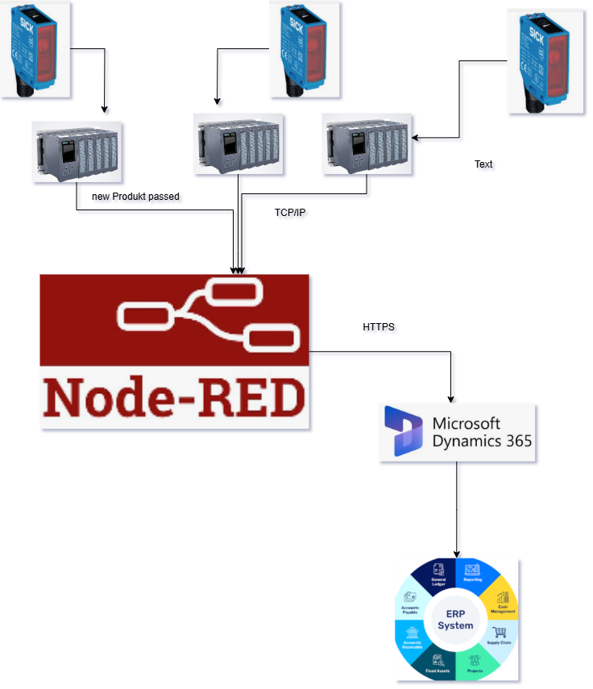
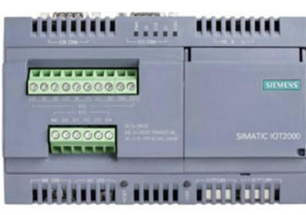

Project Overview
In this project, I connected industrial PLC (Programmable Logic Controller) devices to Microsoft Dynamics 365 using Node-RED. The system was designed to detect product passage using optical sensors and transmit this information directly into the ERP system for real-time processing.
System Architecture
The solution used SICK photoelectric sensors connected to PLCs. When a product passed a sensor, the PLC sent a signal via TCP/IP to a Node-RED instance running on a Siemens SIMATIC IOT2000 device.
Error Handling & Notifications
The PLCs also monitored for system or process errors. If an error was detected, it was transmitted to Node-RED, which then distributed notifications to different users through various channels such as email, depending on the severity and type of error.
Hardware Used
The central processing and integration logic ran on a Siemens SIMATIC IOT2000 device, providing a reliable industrial IoT platform for bridging automation hardware with enterprise software.
Key Achievements
- Successfully integrated PLC data into Microsoft Dynamics 365 in real-time.
- Implemented HTTPS-based secure communication between Node-RED and ERP.
- Automated error notifications to relevant personnel.
- Used industrial IoT hardware (Siemens IOT2000) for robust field deployment.